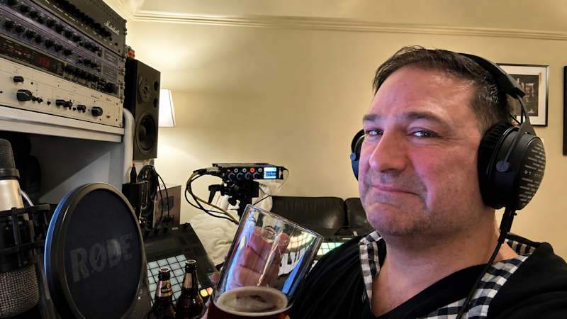
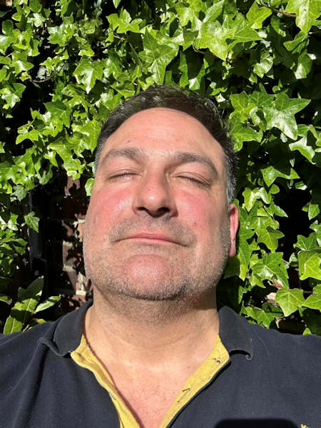

Kaleel Zibe: las segundas oportunidades siempre llegan.Kaleel Zibe: Second Chances Always Come.
Entre los sintetizadores de Kraftwerk y un reemplazo de rodilla, un productor del norte rural de Inglaterra encontró en la música electrónica lo que su juventud no le dio: una audiencia propia.Between Kraftwerk's synths and a knee replacement, a producer from rural northern England found in electronic music what his youth never gave him: an audience of his own.
Por Redacción STEMS
10 AGO 2026 · 10 min de lectura
By STEMS Editorial Staff
AUG 10, 2026 · 10 min read

Kaleel Zibe · Trance, melodic house y synth-pop desde el norte rural de InglaterraKaleel Zibe · Trance, melodic house and synth-pop from rural northern England
En algún lugar de Northumberland, el condado más rural del noreste de Inglaterra, hay un estudio recién estrenado. No está en la sala de estar —ahí vivió durante años, entre juguetes de los hijos y visitas familiares que esquivaban los cables— sino en un cuarto propio, en una casa a la que Kaleel Zibe se mudó a finales del año pasado. Fue una decisión doméstica antes que artística: separar la vida de la máquina. Pero para un productor de 58 años que hace apenas unos años empezó a publicar bajo su propio nombre, ese cuarto también es un símbolo. Es el lugar donde, dice, está viviendo "una segunda oportunidad".
Los primeros sonidos
La historia empieza, como tantas historias del synth-pop británico, en la infancia. A mediados de los años setenta y ochenta, en casa, sonaban Gary Numan, Kraftwerk y The Human League. El primer disco que compró con su propio dinero fue Upstairs at Eric's, de Yazoo. Pero hubo un instante bisagra: la llegada de Oxygène, de Jean-Michel Jarre. Kaleel lo describe como una intoxicación. "Quedé completamente enganchado a esos sonidos", cuenta, y admite que todavía hoy, cuando escucha sus propias mezclas, distingue ecos de esa influencia.
La curiosidad por el "cómo se hace" nunca fue exclusiva del synth-pop. Escuchaba pop, metal, música clásica, y siempre se preguntaba lo mismo: de qué estaba hecho ese sonido. Esa pregunta, dice, la tuvo "desde niño".
Treinta años de distancia
Lo llamativo de la trayectoria de Kaleel no es que haya empezado tarde, sino que empezó dos veces. En los años noventa, en su veintena, ya hacía música dance y la pinchaba en fiestas que él mismo organizaba en casas. Ahí se detuvo. No porque perdiera el interés, sino porque el camino de la producción a la distribución era, en ese momento, casi inaccesible para alguien sin sello ni contactos.
Lo que cambió no fue su talento sino la infraestructura: plataformas de autodistribución como DistroKid y estaciones de trabajo digitales como Ableton le permitieron, hace un par de años, controlar todo el proceso —de la producción al lanzamiento— sin intermediarios. A eso se sumó otra pieza: TikTok e Instagram, que le dieron la posibilidad de encargarse también de su propia promoción. "Ahora tengo la red que la industria musical no me dio en mis veintes", resume sobre esta etapa.
Una familia que aprendió a convivir con el estudio
El regreso a la música no fue indoloro puertas adentro. Kaleel cuenta, sin dramatismo, que su exesposa no recibió con entusiasmo esta nueva etapa. Sus hijos, en cambio, se transformaron en cómplices: hoy hacen música juntos, y es con ellos con quienes comparte el proceso creativo. Uno de esos vínculos quedó registrado en "Rise", su tema más conocido, en el que canta su hija Isabella.
El divorcio, dice sin rodeos, terminó por darle el tiempo que necesitaba. Durante un tiempo el estudio ocupó la sala de su antigua casa; la mudanza reciente a un espacio con estudio dedicado resolvió, finalmente, la tensión entre la vida familiar y el trabajo musical.
Autodidacta, con permiso para seguir aprendiendo
La formación musical de Kaleel tiene dos capítulos. El primero es clásico: guitarra clásica de niño, guitarra eléctrica más tarde, bandas en la adolescencia y la juventud, siempre con profesores de por medio. El segundo es completamente distinto: todo lo relacionado con producción electrónica lo aprendió solo. Cuando empezó a usar Cubase en los noventa, YouTube ni existía; tuvo que aprender a los tropiezos. Hoy la plataforma es, en sus palabras, una parte central de su educación continua, junto con un curso online de mezcla de EDM que decidió tomar porque mezcla y masteriza su propio material.
Esa autoexigencia técnica quedó a prueba hace poco, con el desafío más grande que recuerda haber enfrentado: un remix de hard trance para un sello nuevo, que saldrá en septiembre, con especificaciones "extremadamente exigentes" —hasta en el sonido de cada sample de batería—. El máster tenía que sonar a -5,7 LUFS, un nivel de volumen pensado para que el tema resistiera sin perder intensidad en una sesión de club. Nunca antes, dice, había usado seis clippers y dos limitadores en una misma cadena de masterización.
"Fue muy disfrutable. Nunca voy a dejar de aprender."
Sin escena local, con público global
Preguntado por la escena de su región, Kaleel responde con honestidad poco habitual: no está seguro de que exista una escena electrónica local donde vive. Incluso cuando residía en Newcastle-upon-Tyne apuntaba, según cuenta, a un público mundial antes que a un circuito de barrio.
Es una paradoja que el propio contexto ayuda a explicar. El norte rural de Inglaterra tiene una tradición musical fuerte pero dispersa: Northumberland es más conocido por sus festivales de folk, gaitas tradicionales y música en vivo en salones de pueblo que por clubes o colectivos de electrónica. La escena que sí existe en la región tiende a concentrarse en Newcastle, donde pequeños espacios independientes en el barrio de Ouseburn sostienen circuitos de música emergente y underground. Para un productor de música electrónica que vive fuera de esa ciudad, salir a buscar audiencia en plataformas globales no es una elección estética: es, casi, la única opción disponible.
Kaleel nunca tocó en vivo como artista de electrónica —"todavía", aclara, dejando la puerta abierta—. Sí subió a escenarios antes, en una banda de metal y luego en un dúo de covers, hace ya varios años.
La edad, según el algoritmo
Uno de los tramos más francos de la conversación es sobre la edad. TikTok, la plataforma central para el descubrimiento musical hoy, tiene una demografía joven, y Kaleel siente que ahí lo perciben como "viejo". Él mismo dice sentirse cómodo en la plataforma, aunque reconoce que su audiencia es mayor que el usuario típico de TikTok. Ha recibido comentarios negativos sobre su edad, sobre todo en "Rise", el tema que canta con su hija, pero decidió usar esos comentarios a su favor: sus seguidores salieron a defenderlo.
Hay una frase que resume su relación con el tiempo: se siente "todavía en sus veintes por dentro" y se imagina "de fiesta hasta caer muerto". La contracara llegó con un reemplazo de rodilla reciente, que lo devolvió, dice, a la realidad —un tipo de recordatorio que uno no contempla cuando es joven.
Lo que queda cuando termina la canción
Preguntado sobre qué quiere que sienta quien escuche su música, Kaleel no habla de éxito ni de streams: habla de reconocimiento. Quiere que la gente encuentre algo de sí misma en sus temas, sea una sensación de euforia, el recuerdo de estar enamorado o el de un corazón roto. Conectar su propia experiencia de vida con la de un desconocido es, para él, la medida de si valió la pena.
Y ahí vuelve la idea de la segunda oportunidad. A los veinte no tenía la red de contactos que la industria exige; ahora sí, aunque el terreno esté saturado de gente haciendo música. Lejos de desalentarlo, esa saturación lo empuja a mejorar. Los mensajes que recibe de oyentes que le cuentan cómo se conectaron con sus canciones son, dice, su verdadera recompensa —y la razón por la que agradece haber tenido, en la mediana edad, la chance de vivir esto. La conexión con otras personas, resume, es lo que lo mueve.
— Fin del artículo
Somewhere in Northumberland, the most rural county in northeast England, there's a newly built studio. It's not in the living room — that's where it lived for years, tangled between the kids' toys and family visits dodging the cables — but in a room of its own, in a house Kaleel Zibe moved into late last year. It was a domestic decision before an artistic one: separating life from the machine. But for a 58-year-old producer who only started releasing music under his own name a couple of years ago, that room is also a symbol. It's the place where, he says, he's living out "a second chance."
The First Sounds
The story starts, like so many British synth-pop stories, in childhood. "I'm nearly 58, so that would be back in the mid 70's and 80's as a child at home," he says, "mainly with all the electronic stuff like Gary Numan, Kraftwerk, The Human League, etc." The first album he ever bought with his own money was Yazoo's Upstairs at Eric's — "the synths were fantastic." But there was a hinge moment: the arrival of Jean-Michel Jarre's Oxygène. "I was intoxicated and absolutely hooked on the sounds," he recalls, adding that he can still occasionally hear that influence coming out in some of his own tracks today.
The curiosity about "how it's made" was never exclusive to synth-pop. He listened to pop, metal, classical music, and always wondered the same thing. "I think I always thought that from being a kid," he says. "I'd listen to any music... and think: I wonder how that's made."
Thirty Years Apart
What's striking about Kaleel's trajectory isn't that he started late — it's that he started twice. In his 20s, back in the 1990s, he was already making dance music and playing it at house parties he organised himself. Then he stopped. Not because his interest faded, but because back then the road from production to distribution was nearly closed to anyone without a label or connections.
What changed wasn't his talent but the infrastructure: self-distribution platforms like DistroKid and DAWs like Ableton meant that, a couple of years ago, he could handle the entire process — from production to release — himself. TikTok and Instagram added another piece, letting him handle his own promotion too. "I didn't have the music industry network in my 20's to get my tracks to a wider audience," he says of this stage. "Now I do."
A Family That Learned to Live With the Studio
Coming back to music wasn't painless at home. Kaleel says plainly, without drama, that his ex-wife "wasn't very impressed." His kids, on the other hand, became allies: today they make music together, and it's with them that he shares the creative process. "My kids have always been very supportive though, and I make music with them now," he says. One of those bonds is on record in "Rise," his best-known track, sung by his daughter Isabella.
The divorce, he says without dressing it up, is ultimately what gave him the time he needed. For a while, the studio took over his old living room; the recent move to a bigger place with a dedicated studio finally resolved the tension between family life and the music. "Family areas are unaffected now," he says. "Much better balance."
Self-Taught, With Permission to Keep Learning
Kaleel's musical education has two chapters. The first is classical: classical guitar as a child, then electric guitar, bands through his teens and 20s, always with tutors involved. The second is entirely different: everything about electronic production he taught himself. When he started using Cubase in the '90s, YouTube didn't exist yet, so he had to muddle his way through. Today the platform is, in his words, a big part of his ongoing education, along with an online EDM mixing course he took because he mixes and masters his own material.
That technical self-demand was recently put to the test with the biggest challenge he can remember: a hard trance remix for a new label, out in September, with specifications he calls "extremely exacting" — down to the sound of each individual drum sample. The master had to sit at -5.7 LUFS, "eye-wateringly loud," so the track would hold up with the same intensity as everything else in a club set. He'd never before used six clippers and two limiters on a single master chain.
"Very enjoyable though. I'll never stop learning."
No Local Scene, Global Audience
Asked about his region's scene, Kaleel answers with unusual honesty: he's not even sure a local electronic scene exists where he lives. "To be honest, I don't really know if the local scene exists!" Even when he lived in Newcastle-upon-Tyne, he says, he was targeting a worldwide audience rather than a neighbourhood circuit.
It's a paradox the context itself helps explain. Rural northern England has a strong but scattered musical tradition: Northumberland is better known for folk festivals, traditional bagpipes and live music in village halls than for clubs or electronic collectives. What scene does exist in the region tends to cluster in Newcastle, where small independent venues in the Ouseburn area sustain emerging and underground music circuits. For an electronic producer living outside that city, reaching for a global audience on platforms isn't an aesthetic choice — it's almost the only option available.
Kaleel has never played live as an electronic artist — "yet," he clarifies, leaving the door open. "Maybe in the future! I'd love to, that's for sure." He did gig before, in a metal band and then a covers duo, though that was a long time ago.
Age, According to the Algorithm
One of the most candid stretches of the conversation is about age. TikTok, the main platform for music discovery today, skews young, and Kaleel feels people see him as old there. He says he's completely at home on TikTok himself, though he acknowledges his audience skews older than the platform's usual demographic. He's had negative comments about his age, especially on "Rise," the track his daughter sings on, but he's tried to turn that against the trolls — and his fans really stuck up for him.
There's a line that sums up his relationship with time: "I'm still in my 20's inside and see myself raving till I drop dead!" The flip side arrived with a recent knee replacement, which he says brought him back to reality — the kind of reminder you just don't consider when you're young.
What's Left When the Song Ends
Asked what he wants listeners to feel, Kaleel doesn't talk about success or streams — he talks about recognition. "I want them to find something of themselves in it," he says, "whether that's a euphoric feeling, or a memory of being in love, or brokenhearted." Connecting his own life experience with someone else's is, for him, the measure of whether it was worthwhile.
And that's where the idea of a second chance comes back. In his 20s he didn't have the industry network he has now, even if the field is flooded with people making music. Far from discouraging him, that saturation pushes him to get better. The messages he gets from listeners telling him how they connected with his songs are, he says, his real reward — and the reason he's glad to have had the chance to do this in middle age. "Connection with other people is my main motivation," he sums up, "and I love this second chance to make that happen."
— End of article
Ficha de ArtistaKaleel Zibe

Foto vía kaleelzibe.com
Kaleel Zibe
TranceMelodic HouseSynth-pop
Kaleel Zibe es un productor británico nacido en Papúa Nueva Guinea, de padre libanés y madre inglesa, que ha pasado casi toda su vida entre el noreste y el noroeste de Inglaterra. Tras crecer con Kraftwerk, Gary Numan y Jean-Michel Jarre como referencias, y una primera incursión frustrada en la música dance de los noventa, retomó la producción hace apenas un par de años, ya en la mediana edad, apoyado en herramientas de autodistribución que antes no existían.
Hoy trabaja principalmente en trance, melodic house y synth-pop, con incursiones en drum & bass, publicando nuevo material cada cuatro a ocho semanas. Su tema más conocido, "Rise", cuenta con la voz de su hija Isabella Zibe y se convirtió en un pequeño fenómeno en redes sociales.
Autodidacta en producción electrónica —aprendió Cubase antes de que existiera YouTube—, hoy combina un curso online de mezcla de EDM con la práctica diaria en Ableton Live, mezclando y masterizando él mismo cada lanzamiento.
Kaleel Zibe is a British producer born in Papua New Guinea to a Lebanese father and an English mother, who has spent most of his life between northeast and northwest England. Raised on Kraftwerk, Gary Numan and Jean-Michel Jarre, and after a first, stalled attempt at dance music in the '90s, he picked production back up just a couple of years ago, already in middle age, backed by self-distribution tools that simply didn't exist before.
Today he works mainly in trance, melodic house and synth-pop, with forays into drum & bass, releasing new material every four to eight weeks. His best-known track, "Rise," features the voice of his daughter Isabella Zibe and became a small social-media phenomenon.
Self-taught in electronic production — he learned Cubase before YouTube existed — he now pairs an online EDM mixing course with daily practice in Ableton Live, mixing and mastering every release himself.

ComentariosÚnete a la conversación